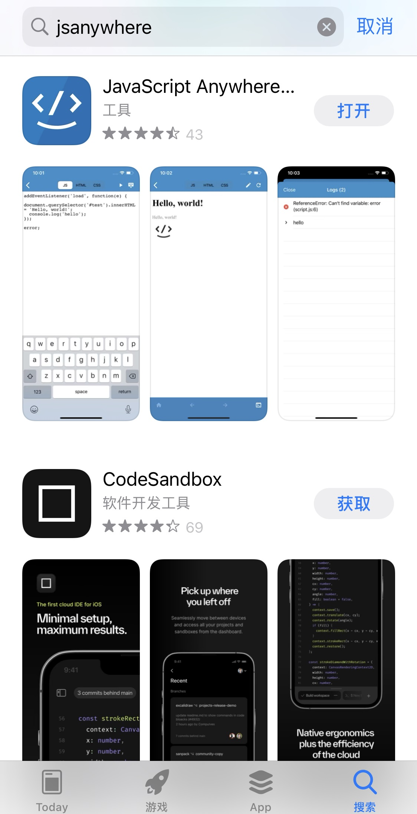
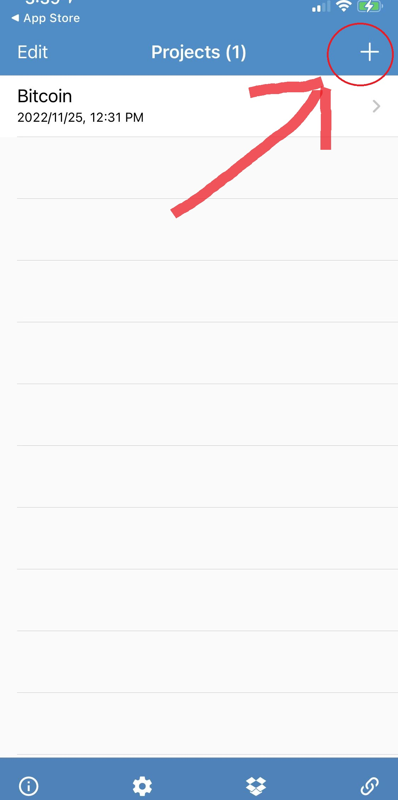
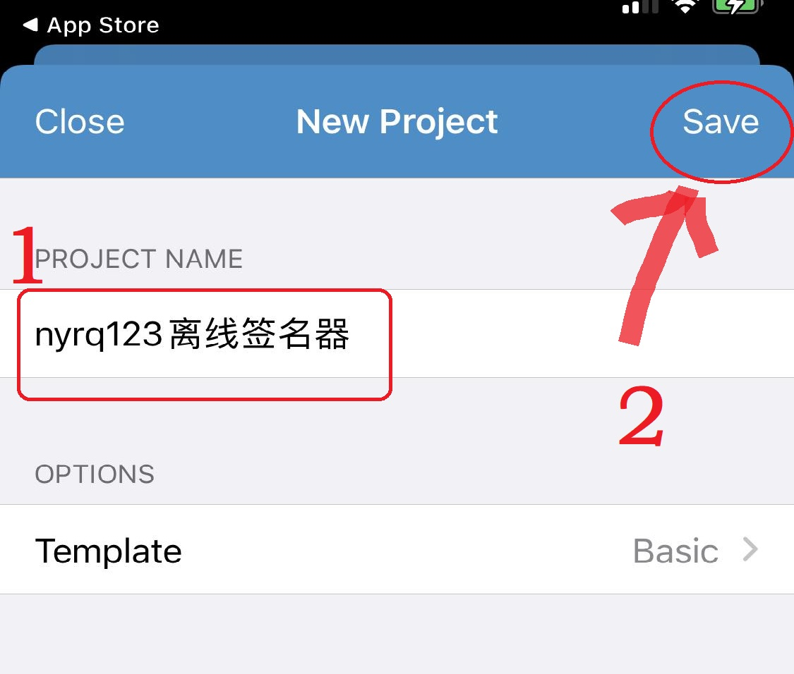
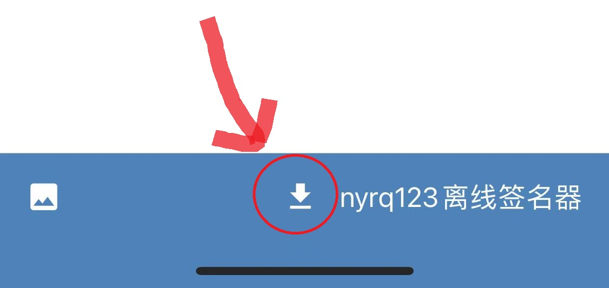
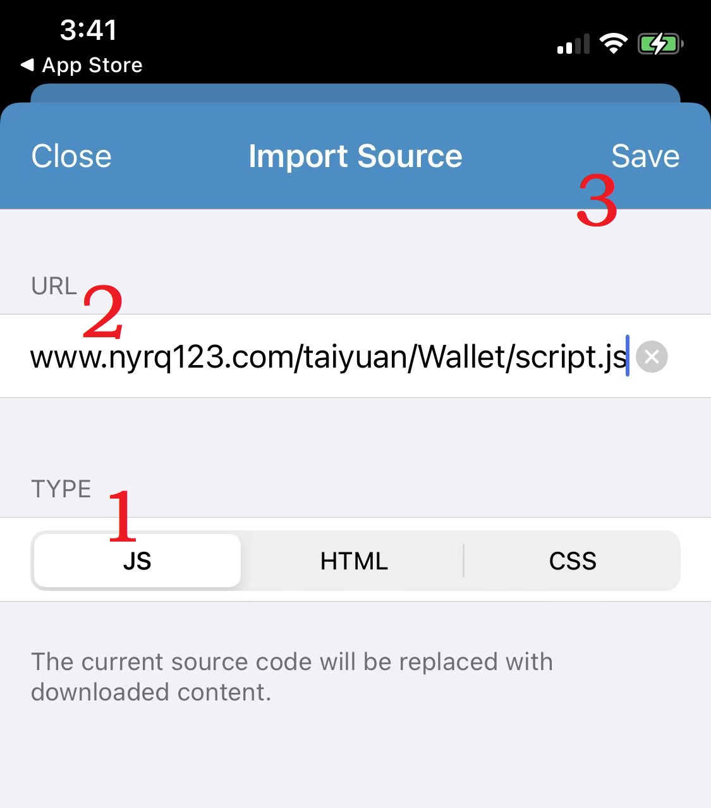
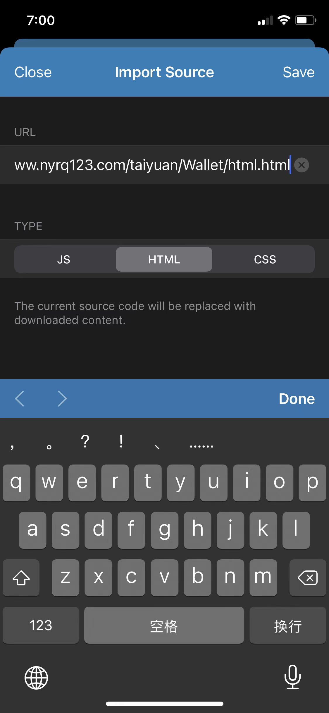
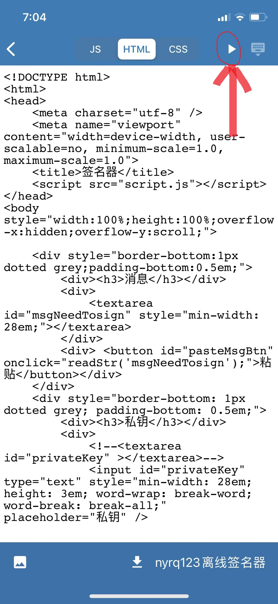
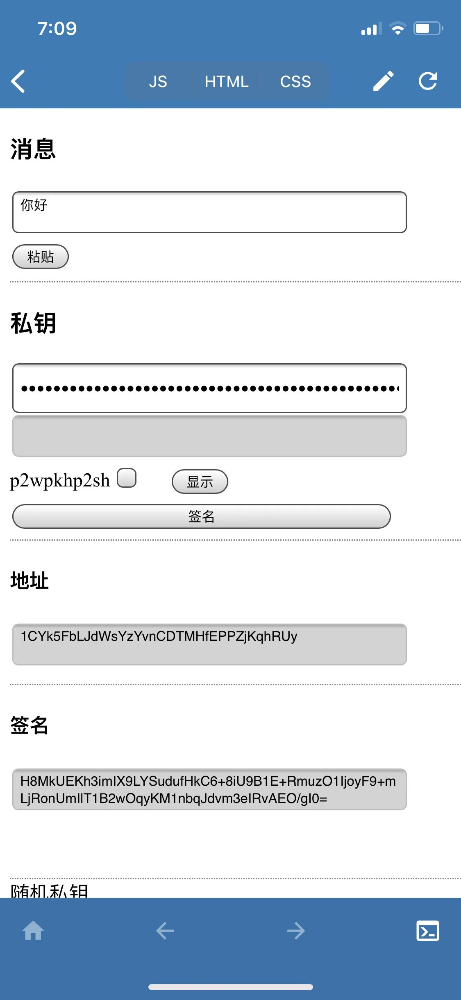
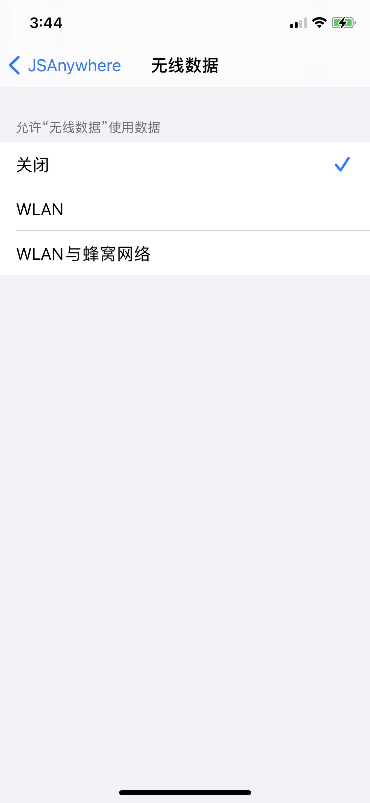

一，打开App Store，查找并下载App JavaScript Anywhere.

二，打开App后，点击右上角的“+”创建新的项目。

三，输入项目名称并点击save。

四，打开项目，点击“↓”下载JavaScript脚本与Html页面！

五，Type点击JS,URL输入www.nyrq123.com/taiyuan/Wallet/script.js,点击Save！

六，再次，点击“↓”！
七，Type点击HTML,URL输入www.nyrq123.com/taiyuan/Wallet/html.html,点击Save！

七，回到项目主页面，点击“▶”，即可运行离线钱包。

八，程序页面如下。

九，运行完毕，不要忘了关闭网络访问权限。这样一个离线签名器就部署好了。

十，由于苹果公司区域性限制规定。有的地点的苹果商店可以直接下载bither App,有的不行。在能行的地点，直接下bither也可以。
你可以安装bither或其他可对消息进行签名与验证的比特币钱包来进行签名！这里的bither只是支持1开头的地址(P2PKH,Pay-to-Pubkey Hash)签名与验证！